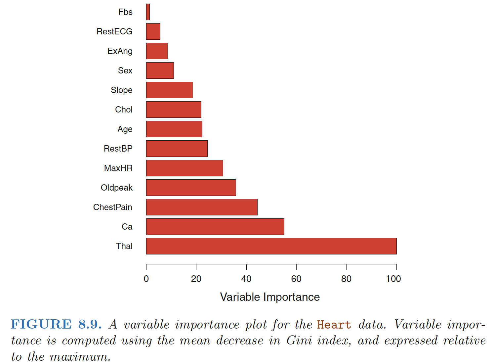
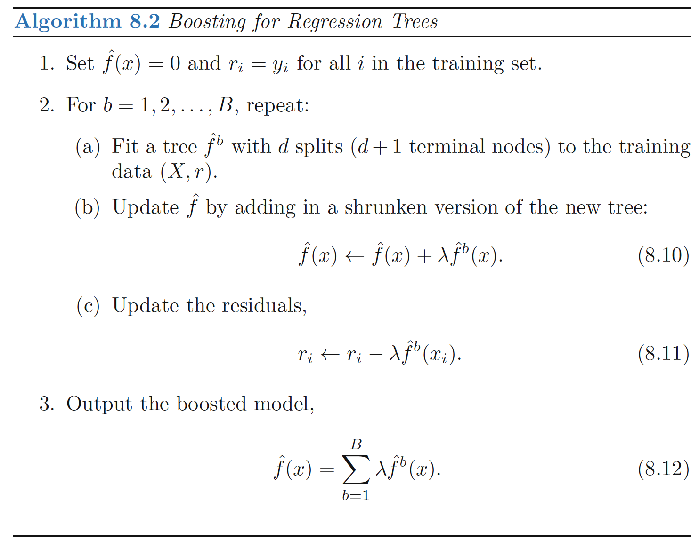

Bagging
Bootstrap aggregation, or bagging, is a general-purpose procedure for reducing the variance of a statistical learning method, frequently used in the context of decision trees.
Averaging a set of observations reduces variance: Recall that given a set of n independent observations Z1, . . . , Zn, each with variance \(σ^2\), the variance of the mean \(\bar{Z}\) of the observations is given by \(σ^2/n\). - A natural way to reduce the variance and hence increase the prediction accuracy of a statistical learning method is to take many training sets from the population, build a separate prediction model using each training set, and average the resulting predictions.
Bootstrap taking repeated samples from the (single) training data set
Bagging - Generate B different bootstrapped training data sets. - Train our method on the bth bootstrapped training set in order to get \(\hat{f}^{*b}(x)\) - Finally average all the predictions, to obtain
\[ \begin{align} \hat{f}_{bag}(x)=\frac{1}{B}\sum_{b=1}^B\hat{f}^{*b}(x) \end{align} \]
Apply bagging to regression trees - Construct B regression trees using B bootstrapped training sets - Average the resulting predictions. These trees are grown deep, and are not pruned. Hence each individual tree has high variance, but low bias. Averaging these B trees reduces the variance.
Bagging on Classification Tree - For a given test observation, we can record the class predicted by each of the B trees, and take a majority vote: the overall prediction is the most commonly occurring class among the B predictions.
B - In practice we use a value of B sufficiently large that the error has settled down, like B=100.
Out-of-Bag Error Estimation
Recall that the key to bagging is that trees are repeatedly fit to bootstrapped subsets of the observations. One can show that on average, each bagged tree makes use of around 2/3 of the observations. The remaining one-third of the observations not used to fit a given bagged tree are referred to as the out-of-bag (OOB) observations.
We can predict the response for the ith observation using each of the trees inwhich that observation was OOB.
- This will yield around B/3 predictions for the ith observation.
- To obtain a single prediction for the ith observation, we can average these predicted responses (regression) or can take a majority vote (classification).
- This leads to a single OOB prediction for the ith observation.
The OOB approach for estimating the test error is particularly convenient when performing bagging on large data sets for which cross-validation would be computationally onerous.
Variable Importance Measures
Bagging improves prediction accuracy at the expense of interpretability - When we bag a large number of trees, it is no longer possible to represent the resulting statistical learning procedure using a single tree, and it is no longer clear which variables are most important to the procedure
Variable Importance - One can obtain an overall summary of the importance of each predictor using the RSS (for bagging regression trees) or the Gini index (for bagging classification trees). - Bagging regression trees: Record the total amount that the RSS is decreased due to splits over a given predictor, averaged over all B trees. A large value indicates an important predictor. \[\begin{align} RSS=\sum_{j=1}^J\sum_{i \in R_j} (y_i-\hat{y}_{R_j})^2 \end{align}\] - Bagging classification trees: Add up the total amount that the Gini index is decreased by splits over a given predictor, averaged over all B trees.

Random Forest
Random forests provide an improvement over bagged trees by way of a small tweak that decorrelates the trees.
As in bagging, we build a number of decision trees on bootstrapped training samples. But when building these decision trees, each time a split in a tree is considered, a random sample of m predictors is chosen as split candidates from the full set of p predictors.
The split is allowed to use only one of those m predictors. A fresh sample of m predictors is taken at each split, and typically we choose \(m ≈\sqrt{p}\)
Rationale: - Suppose that there is one very strong predictor in the data set, along with a number of other moderately strong predictors. Then in the collection of bagged trees, most or all of the trees will use this strong predictor in the top split. Consequently, all of the bagged trees will look quite similar to each other. - Hence the predictions from the bagged trees will be highly correlated. Unfortunately, averaging many highly correlated quantities does not lead to as large of a reduction in variance as averaging many uncorrelated quantities.
Decorrelating the trees: Random forests forces each split to consider only a subset of the predictors, making the average of the resulting trees less variable and hence more reliable.
Boosting
Boosting: another approach for improving the predictions resulting from a decision tree. - Trees are grown sequentially: each tree is grown using information from previously grown trees. - Boosting does not involve bootstrap sampling; instead each tree is fit on a modified version of the original data set.

Idea behind this procedure - Unlike fitting a single large decision tree to the data, which amounts to fitting the data hard and potentially overfitting, the boosting approach instead learns slowly. - Given the current model, we fit a decision tree to the residuals from the model. That is, we fit a tree using the current residuals, rather than the outcome Y , as the response. - We then add this new decision tree into the fitted function in order to update the residuals. Each of these trees can be rather small, with just a few terminal nodes, determined by the parameter d in the algorithm. - By fitting small trees to the residuals, we slowly improve \(\hat{f}\) in areas where it does not perform well. - The shrinkage parameter λ slows the process down even further, allowing more and different shaped trees to attack the residuals.
Note that in boosting, unlike in bagging, the construction of each tree depends strongly on the trees that have already been grown.
Boosting has three tuning parameters: 1. The number of trees \(B\). 2. The shrinkage parameter \(λ\), a small positive number. This controls the rate at which boosting learns. 3. The number \(d\) of splits in each tree, which controls the complexity of the boosted ensemble. Often d = 1 works well, in which case each tree is a stump, consisting of a single split. In this case, the boosted ensemble is fitting an additive model, since each term involves only a single variable. More generally \(d\) is the interaction depth, and controls the interaction order of the boosted model, since \(d\) splits can involve at most d variables.
Boosting V.S. Random forests:
- In boosting, because the growth of a particular tree takes into account the other trees that have already been grown, smaller trees are typically sufficient.
- Using smaller trees can aid in interpretability as well; for instance, using stumps leads to an additive model.